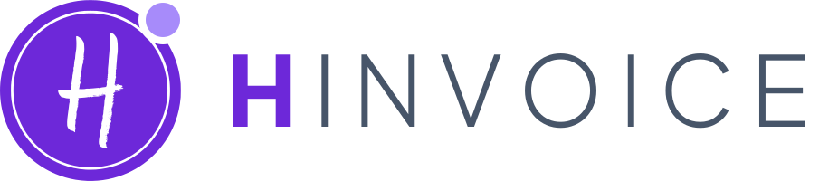

Instalar os programas Softwora
Cada produto pode ser usado online, experimentado com dados fictícios ou instalado no Windows.
Gestão de clínicas veterinárias: agenda, fichas dos animais, vacinas, faturação e marcação online.
Versão 1.0.0 · Windows e web
Gestão clínica de reabilitação: fisioterapia, avaliação, planos, sessões e faturação.
Versão 1.0.38 · Windows e webGestão de clínicas de endoscopia: exames, relatórios, histologia, vigilância e qualidade.
Versão 1.2.0 · Windows e webGestão de clubes de futebol com formação: atletas, treinos, sócios, quotas, direção e patrocínios.
Versão 7.1.0 · Windows e webGestão para PME: comercial, clientes, suporte, projetos, financeiro e pessoas.
Versão 1.1.0 · Windows e webMarketplace de marcas e pessoas: loja, carrinho com vários vendedores, pagamentos Stripe e painel do vendedor.
Versão 0.9.0 · Windows e web
Faturação certificada pela AT: faturas, recibos, notas de crédito e débito, SAF-T (PT).
Versão 1.2.0 · Windows e web